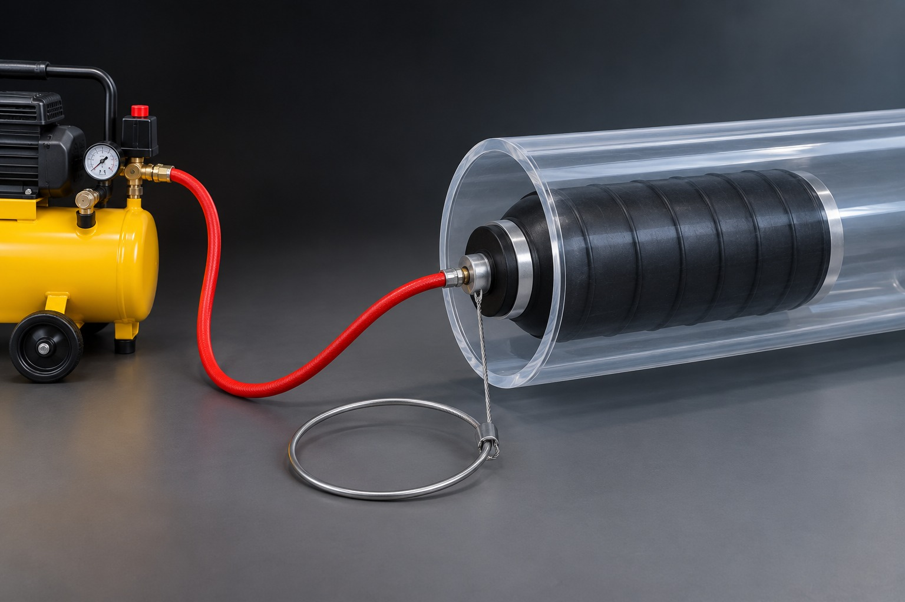
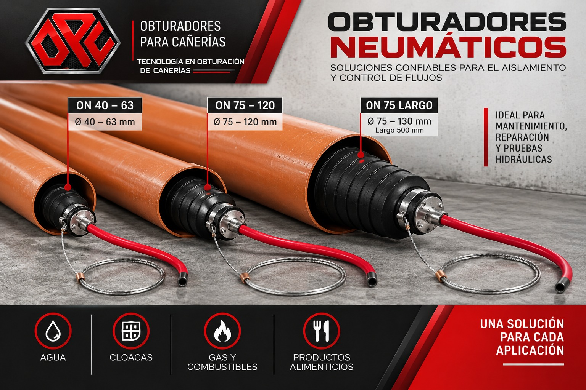
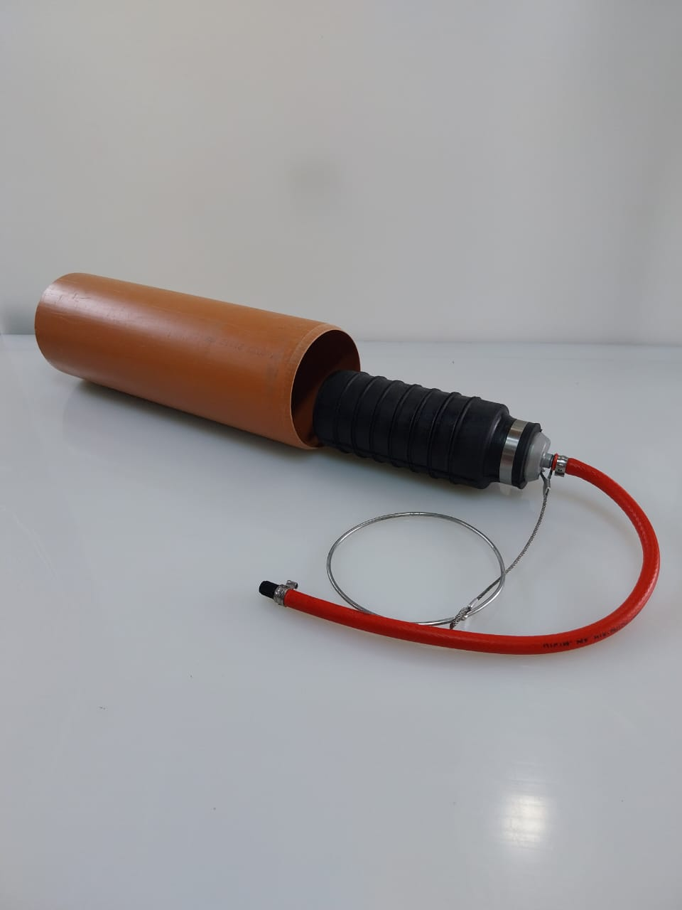
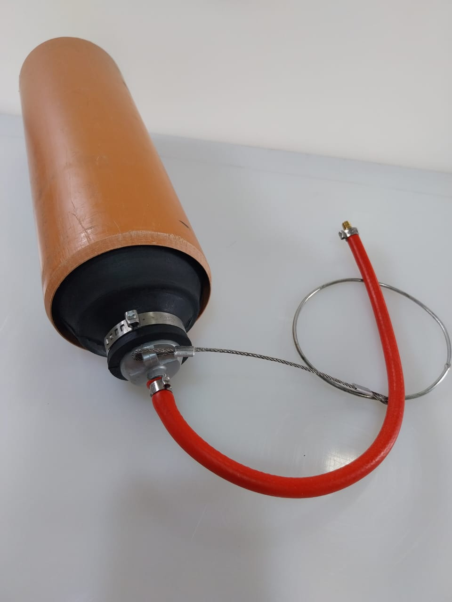
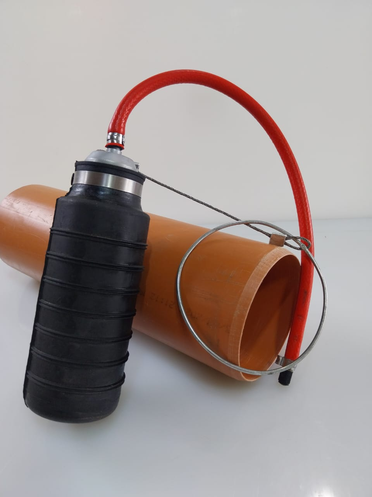

Obturadores neumáticos
Soluciones prácticas para aislamiento y pruebas en tuberías.
Dispositivos de expansión mediante aire, diseñados para el aislamiento temporal de tuberías y para pruebas y trabajos de intervención en redes. Livianos, prácticos y de fácil transporte: se instalan y se recuperan con comodidad en obra.

Aplicaciones
Dónde se usan
- Aislamiento temporal de tramos de tuberías
- Pruebas hidráulicas
- Trabajos de reparación y mantenimiento
- Intervenciones en redes de agua y desagües
- Instalaciones de gas y combustibles, según material y condiciones de servicio
- Procesos industriales que requieren un cierre temporal de la tubería
Características principales
Por qué elegirlos
- Liviano y práctico: facilita la manipulación en instalación y extracción
- Fácil transportabilidad: diseño compacto para trasladar y almacenar
- Rápida colocación para intervenciones eficientes
- Expansión neumática, adaptable al diámetro interior de cada modelo
- Sistema de recuperación mediante eslinga
- Fabricación nacional
Modelos disponibles
Elegí según el diámetro de tu cañería
| Modelo | Rango de obturación | Longitud |
|---|---|---|
| ON 40–63 | 40 a 63 mm | — |
| ON 75–120 | 75 a 120 mm | — |
| ON 75–130 largo | 75 a 130 mm | 500 mm |




Fabricación OPC
¿Necesitás determinar qué modelo corresponde a tu instalación?
Desarrollamos y fabricamos soluciones de obturación y aislamiento de tuberías para obras sanitarias, infraestructura, mantenimiento industrial y redes de servicios. Indicanos el diámetro interior de la cañería y el tipo de aplicación, y te asesoramos sobre la alternativa adecuada.
Hablar por WhatsApp